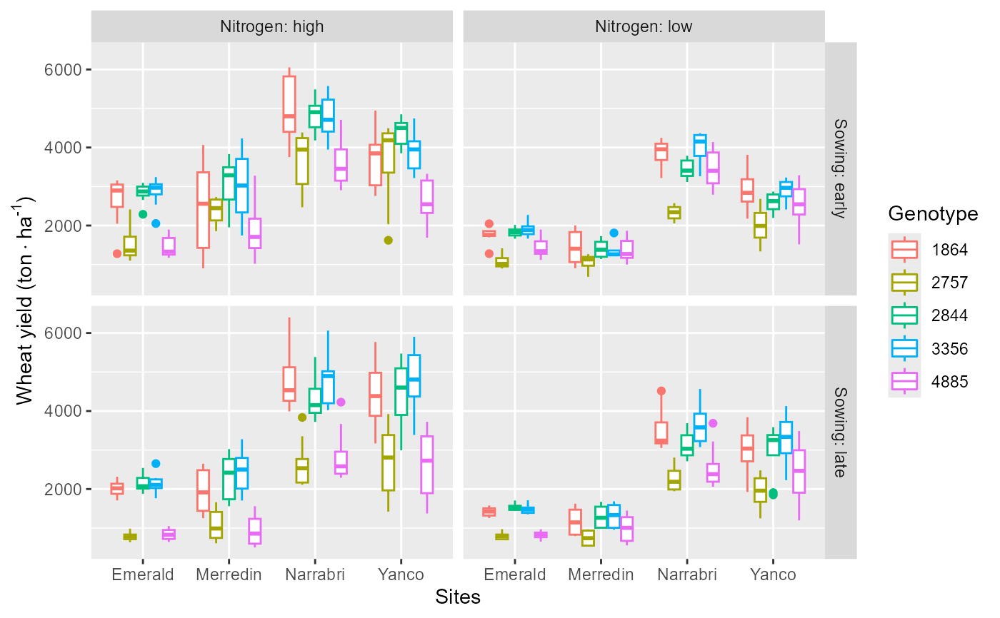

Data.RdMulti-environment trail evaluating 5 genotypes in 4 locations for 4 years, with 2 nitrogen application rates, 2 sowing dates, and 2 CO2 levels of treatments (Casadebaig et al., 2016).
data(Data)
A dataframe with 640 observations on the following 8 variables.
Yield unit: kg*ha^-1.
Genotype genotypes, 5 varieties.
Environment 128 unique combination of environments for each genotype.
Year 4 years.
Sites 4 locations.
Nitrogen 2 nitrogen application levels.
CO2 2 CO2 concentration levels.
Sowing 2 sowing dates.
Casadebaig P, Zheng B, Chapman S, Huth N, Faivre R, Chenu K (2016). “Assessment of the Potential Impacts of Wheat Plant Traits across Environments by Combining Crop Modeling and Global Sensitivity Analysis.” PLOS ONE, 11, 1--27. doi: 10.1371/journal.pone.0146385 , https://doi.org/10.1371/journal.pone.0146385.
data(Data) # \donttest{ ggplot2::ggplot(Data,ggplot2::aes(x=Sites,y=Yield,col=Genotype))+ ggplot2::geom_boxplot()+ ggplot2::facet_grid(Sowing~Nitrogen,labeller =ggplot2::label_both)+ ggplot2::ylab(bquote('Wheat yield (ton' %.%'ha'^'-1'*')'))# }